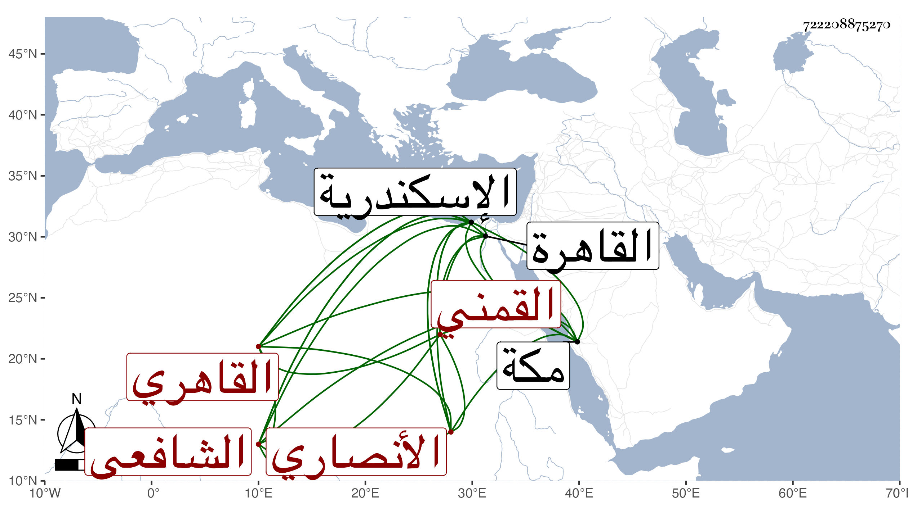

0902Sakhawi.DawLamic.ITO20230111-ara1.EIS1600.722208875270
Biography ID: 722208875270
442
محمد بن أبي بكر بن عمر بن عرفات المحب أبو اليمن بن الزين الأنصاري القمني الصل القاهري الشافعي الآتي أبوه . ولد في جمادى الثانية سنة إحدى وتسعين وسبعمائة بالقاهرة ونشأ بها فحفظ القرآن عند الشهاب أحمد بن محمد بن عماد البنبي وغيره وجوده على الفخر البلبيسي الضرير ثم تلا به لأبي عمرو على الفخر البرماوي وحفظ المنهاج الفرعي والأصلي وألفية ابن ملك وعرضها على النور الادمي وغيره ، واعتنى به أبوه فأحضره على التاج بن الفصيح والصلاح الزفتاوي والأبناسي والغماري والمراغي والجمال الرشيدي وابن الداية وغيرهم ، وأسمعه على التنوخي وابن أبي المجد وابن الشيخة والحافظين العراقي والهيثمي وسمع من أولهما كثيرا من أماليه والتقي الدجوى والفرسيسي والحلاوي والسويداوي والجمال بن الشرائحي والولي العراقي وستيتة ابنة ابن غالي في آخرين وأجاز له أبو هريرة بن الذهبي وأبو الخير بن العلائي وآخرون من الشاميين بل وطائفة من اسكندرية ، وأخذ الفقه عن أيه والبرهان البيجوري والشموس البرماوي والشطنوفي والغراقي ومن قبلهم عن بعضهم والعربية عن الشطنوفي والفخر البرماوي ، ودرس بعد أبيه بالمنصورية وممن كان يحضر عنده فيها العلاء القلقشندي وبالشريفية المجاورة لجامع عمرو وكانت بعد أبيه عينت اللقاياتي فتلطف به الزين عبد الباسط حتى تركها له وبالظاهرية القديمة وباشر النظر عليهما وقتا وانتزع النظر منه وكذا ولي غيرها ، وناب في القضاء وقتا ثم أعرض عنه وسافر مع أبيه إلى مكة وهو في الثالثة ثم حج معه أيضا في سنة تسع عشرة ودخل اسكندرية وغيرها ، وحدث سمع منه الفضلاء أخذت عنه أشياء وكان خيرا سمحا متعبدا بالتهجد في الصوم والإعتكاف متواضعا متوددا لين الجانب شبيها بشكل أبيه ولكن مادته في العلم ضعيفة ولذا عيب أبوه بقوله عنه الرافعي والروضة نصب عينه وربما اعتنى بتوجيهه بكونهما مقابلة في الكتبية . مات وقد عرض له انتفاخ زائد بأنثييه من مدة في يوم الاثنين رابع عشر رجب سنة تسع وخمسين رحمه الله وإيانا .
